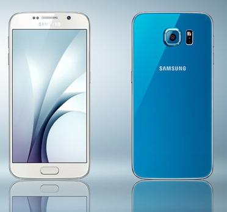
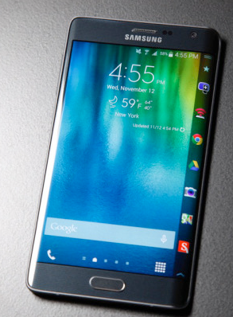
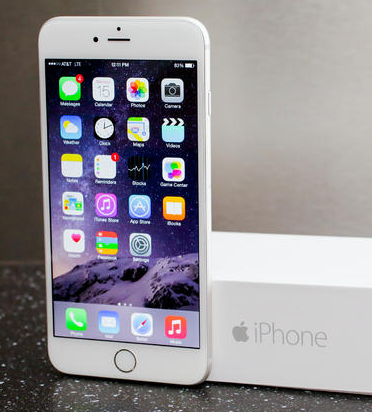

Samsung Galaxy S6 este un smartphone produs de catre Samsung Electronics, ce are la baza un sistem de operare de tip Android v5.0.2 (Lollipop), fiind succesorul lui Samsung Galaxy S5.
Acest model a fost lansat oficial pe data de 1 martie 2015 la Barcelona, in Spania, urmand a fi comercializat oficial in magazine din luna aprilie a aceluiasi an.

Samsung Galaxy S6

Noua aparitie de la Samsung a fost lansata in acelasi timp cu Samsung S6 Edge, care este similar ca specificatii, singurele diferente notabile fiind cele vizibile la exterior, Samsung S6 Edge avand ecranul curbat pe ambele parti.
Samsung Galaxy S6
Specificatii
- Announced 2015, March
- Size 5.1 inches (~70.7% screen-to-body ratio)
- Resolution 1440 x 2560 pixels (~577 ppi pixel density)
- PLATFORM OS Android OS, v5.0.2 (Lollipop)
- CPU Quad-core 1.5 GHz Cortex-A53 and Quad-core 2.1 GHz Cortex-A57
- GPU Mali-T760MP8
- Internal 32/64/128 GB, 3 GB RAM
- CAMERA Primary 16 MP, 2988 x 5312 pixels
Samsung Galaxy S6

iPhone 6 este cel mai nou smartphone din seria iPhone dezvoltate de compania americana Apple.
Produsul a fost prezentat public pe data de 9 septembrie 2014. Dispozitivul este, in comparatie cu predecesoarele lor sensibil mai mare ca dimensiune, avand o marime a display-ului de 4,7 toli (inch).
iPhone 6
Specificatii
- Announced 2014, September
- Size 4.7 inches (~65.8% screen-to-body ratio)
- Resolution 750 x 1334 pixels (~326 ppi pixel density)
- PLATFORM OS iOS 8, upgradable to iOS 8.3
- Chipset Apple A8
- CPU Dual-core 1.4 GHz Cyclone (ARM v8-based)
- GPU PowerVR GX6450 (quad-core graphics)
- Internal 16/64/128 GB, 1 GB RAM
- CAMERA Primary 8 MP, 3264 x 2448 pixels
iPhone 6
Nokia Lumia 1520 este un phablet cu sistemul de operare Windows Phone 8 care a fost prezentat pe 22 octombrie 2013 la evenimentul Nokia World in Abu Dhabi.
Acesta este primul dispozitiv cu Windows Phone 8 care are un afisaj 1080p Full HD si este primul care ruleaza pe un procesor quad-core.
Nokia Lumia 1520
Specificatii
- Announced 2013, October
- Status Available. Released 2013, November
- DISPLAY Type IPS LCD capacitive touchscreen, 16M colors
- Size 6.0 inches (~71.4% screen-to-body ratio)
- Resolution 1080 x 1920 pixels (~367 ppi pixel density)
- PLATFORM OS Microsoft Windows Phone 8 ,planned upgrade to Windows 10
- CPU Quad-core 2.2 GHz Krait 400
- GPU Adreno 330
- Internal 16 GB (RM-940 only)/32 GB, 2 GB RAM
- CAMERA Primary 20 MP, 4992 х 3744 pixels, Carl Zeiss optics, optical image stabilization, autofocus, dual-LED flash, check quality
Nokia Lumia 1520